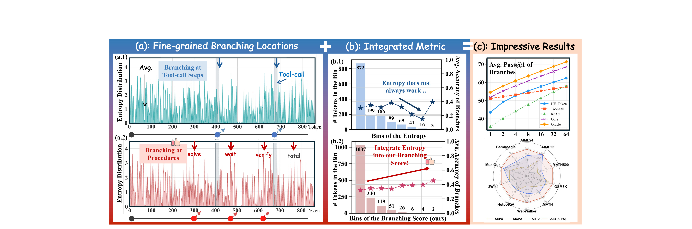
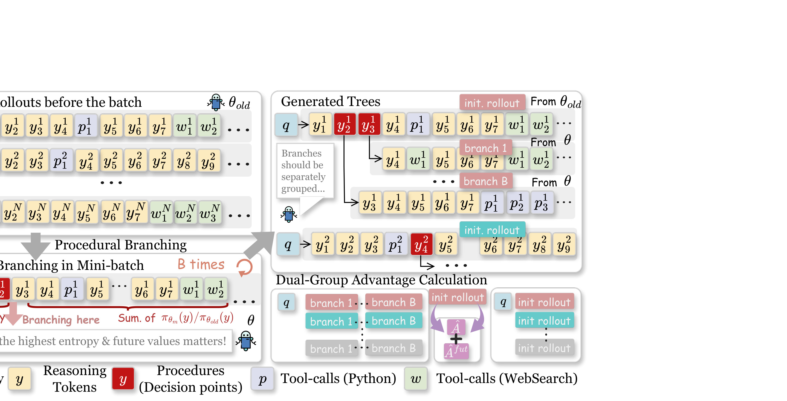
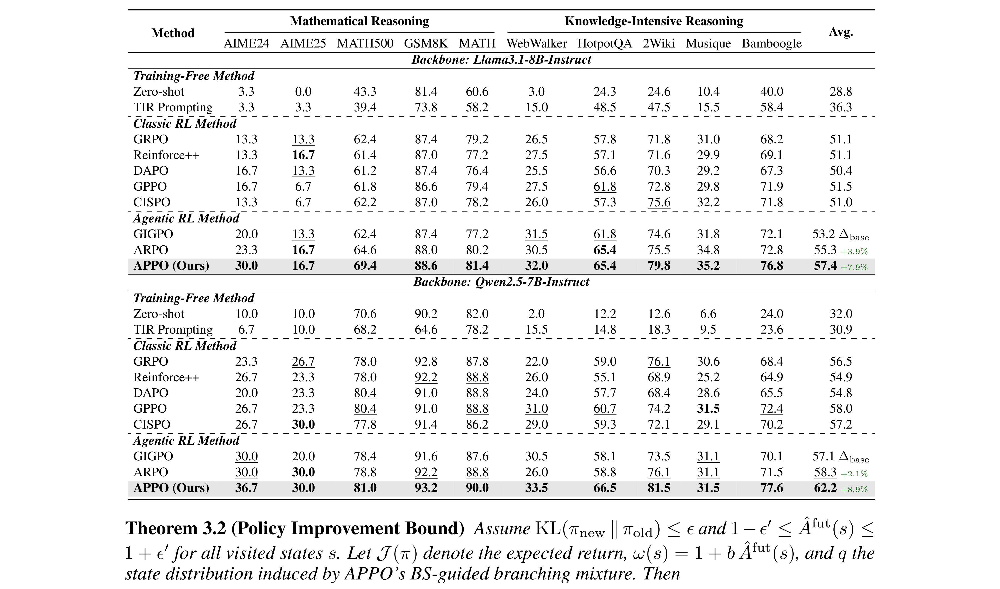
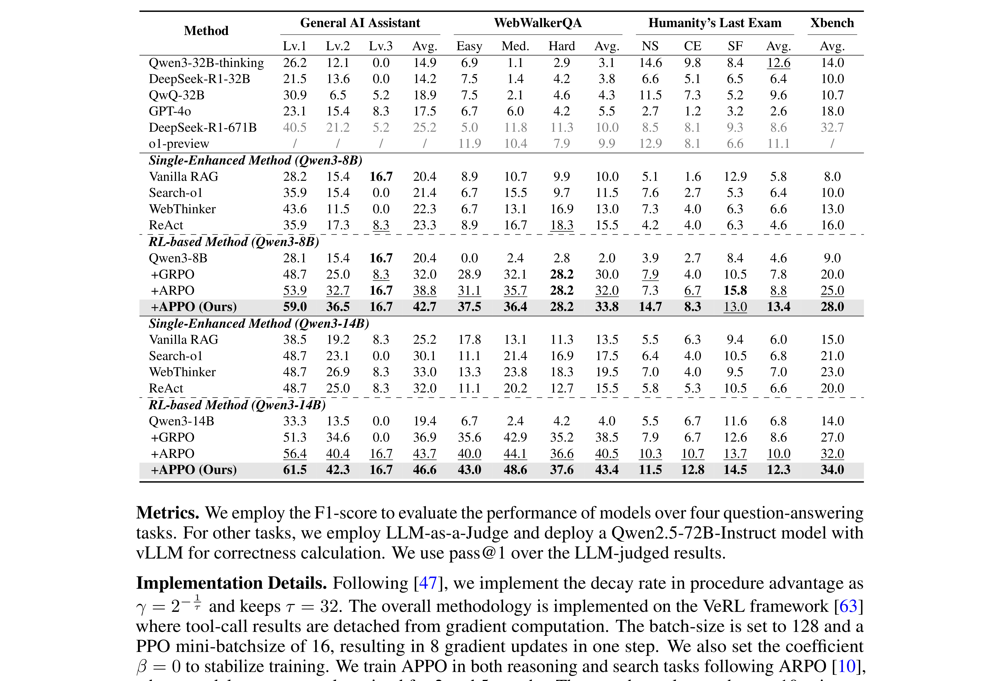
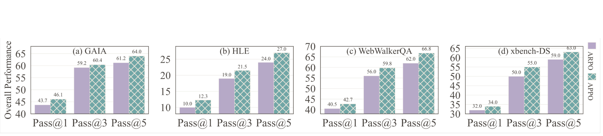
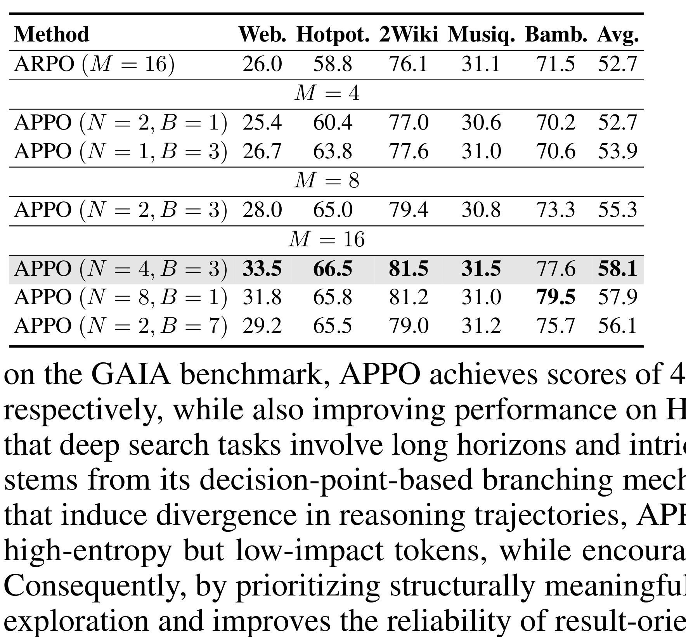
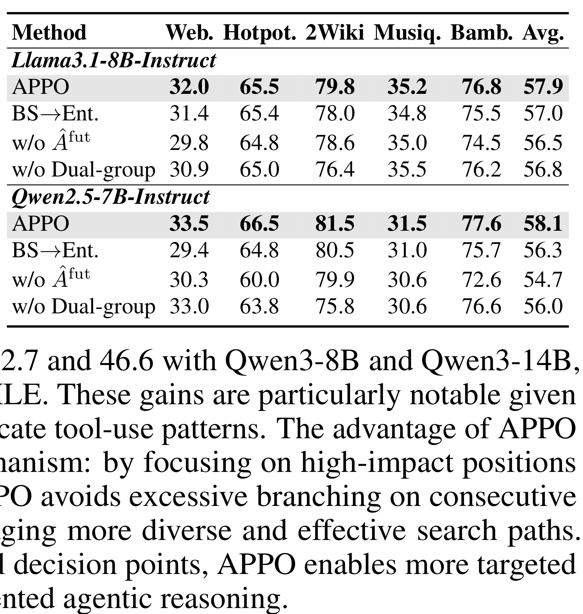
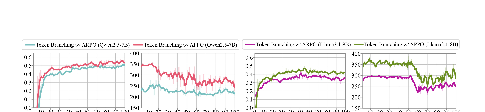
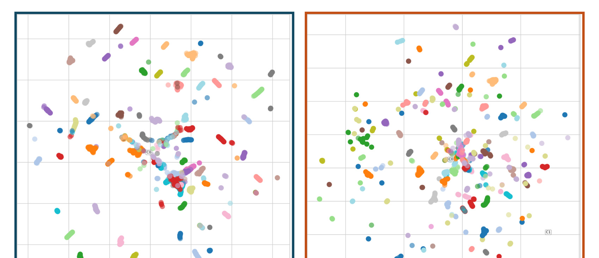
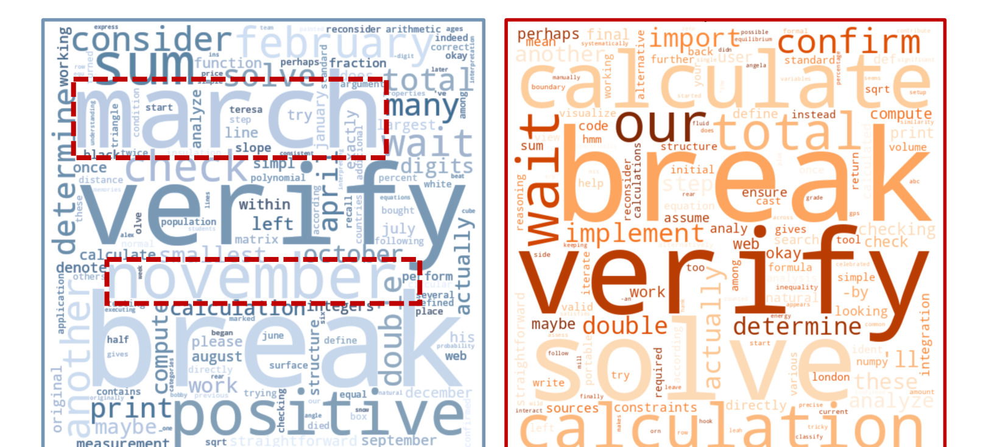

APPO: Agentic Procedural Policy Optimization
APPO 这篇论文讨论的是 agentic RL 里最容易被粗粒度抽象掩盖的一件事：一次工具调用、一个 thinking block、一个 workflow step，往往不是实际决定成败的最小单位。论文的一作是 Xucong Wang，机构标注为中国科学技术大学与阿里巴巴高德，合作作者来自阿里巴巴高德和南方科技大学；论文入口为 arXiv:2606.12384，PDF 内的项目链接指向 GitHub 仓库 https://github.com/AMAP-ML/APPO，访问状态已核验为 200。论文发布时间是 2026-06-10，主题属于 Machine Learning 与 Artificial Intelligence。
我对这篇论文的第一判断是：它不是简单把 PPO 或 GRPO 换一个名字套到 agent 上，而是在问 agentic RL 中“在哪里分支”和“分支之后怎样分配 credit”这两个问题。APPO 的核心动作是把 branching 和 credit assignment 从工具边界或固定交互轮次下沉到生成序列里的细粒度 decision points。它提出 Branching Score，把 token entropy 与后续 continuation 的 policy-induced likelihood gain 结合起来，再用 procedure-level advantage scaling 给这些被选中的过程片段分配更强的学习信号。实验覆盖 13 个 benchmark，包括数学推理、知识密集推理与 DeepSearch 任务，整体比强 agentic RL baseline 提升接近 4 个点，同时保持工具调用效率和一定可解释性。
1. 背景和问题
Agentic RL 的难点不只是奖励稀疏，而是奖励稀疏之后很难知道该奖励应该归因给哪一个中间决策。一个 tool-use agent 的轨迹通常包含 thinking、search、python execution、intermediate observation 和 final answer。最终 reward 往往只告诉我们整条轨迹成功或失败，却不告诉我们是“决定先查哪一个网页”“把问题改写成什么搜索词”“何时转向 Python 计算”“是否验证前一步推断”中的哪一个动作改变了结果。如果训练算法只在整条 trajectory 或工具调用边界上做 credit assignment，就会把多个原因混在一起：有些 token 只是措辞变化，有些 token 是计划变更，有些 token 是工具调用参数，有些 token 是反思或纠错点，最终都被压进同一个粗粒度优势估计里。
已有 agentic RL 和 tree-based RL 工作已经意识到全轨迹 reward 太粗，所以会从中间位置扩展多个 branch，用 group-relative reward 或 outcome difference 来提供更细的信号。但很多方法仍然依赖工具调用边界、think-action step、固定 workflow stage 或高 entropy token。工具边界的好处是容易定位，缺点是它假设 agent 的关键思考主要发生在外部动作附近；固定 workflow 的好处是结构稳定，缺点是它把不同任务的推理路径压成同一种模板；高 entropy token 的好处是简单，缺点是 entropy 只表示局部不确定性，可能来自罕见词、月份、专名或格式符号，并不一定意味着该位置会影响后续 reasoning outcome。
APPO 的问题意识来自论文 Figure 1 的 pilot study。作者在 tool-integrated rollout 中观察 token entropy 分布，发现高不确定性位置并不集中在 tool-call step，而是分散在 thinking span 内部。更关键的是，按 entropy 分桶后，branch 的平均准确率并不会随 entropy 单调改善；一些 entropy 高的位置只是词表长尾造成的局部波动。相比之下，论文提出的 Branching Score 试图同时看当前 token 的 uncertainty 和后续 continuation 在新旧 policy 下的 likelihood gain，因此更接近“这个位置是不是会让后续路径发生有意义变化”的判据。

Figure 1 对理解 APPO 很关键，因为它把论文的两个负面结论和一个正面动机放在同一张图里。左侧说明如果只在 tool-call 附近分支，会漏掉大量非工具 token 中的程序化决策；中间说明 raw entropy 与 branch accuracy uncertainty 的关系并不稳定，高熵不等于高价值；右侧则给出按不同 criteria 重新采样 branch 的结果，显示 oracle、Branching Score 与 baseline 之间的差异。这个图不是为了证明 APPO 的最终性能，而是为了证明“分支位置”本身需要重新建模。对 agent 训练来说，这意味着我们不能把思考过程当成一个黑箱，也不能把每一次工具调用当成唯一可解释节点；真正需要被优化的是能改变后续计划、验证、搜索和计算路径的细粒度 procedure。
这篇论文使用 procedure 这个词，并不是指人工写好的固定 prompt 过程，而是指围绕高影响 decision point 组织起来的推理模式。一个 procedure 可能表现为“先拆分问题再搜索”“先验证约束再计算”“先比较两个候选解释再选择工具”，这些模式在 token 序列中没有显式边界，却会影响后续分支的 reward 分布。APPO 的目标就是在在线 agentic RL 过程中把这些 latent procedure 暴露出来：先用 Branching Score 找到可能改变后续轨迹的位置，再从这些位置重新采样 continuation，最后把这些分支的 reward 差异反馈到原始 rollout 的相关 token 上。
这也解释了为什么论文强调“where to branch”和“how to assign credit after branching”必须同时处理。只改变分支位置但仍然把所有分支与初始 rollout 混在一起比较，会引入 policy mismatch，因为初始 rollout 来自 behavior policy，branch continuation 来自当前 mini-batch policy。只改变 advantage 估计但仍然在粗粒度边界分支，又无法触达 thinking span 里的关键 procedure。APPO 的完整性在于：分支选择、分支采样、分组优势估计和未来影响加权是一组联动设计，而不是孤立的 metric trick。
从应用侧看，这篇论文最值得关注的地方是它把 agent 训练中的“可解释中间节点”从手工工程对象变成了可计算对象。过去我们可能会把失败归因到搜索工具不好、prompt 不够明确、workflow 设计不合理，或者模型本身能力不足；APPO 提醒我们，很多失败其实发生在思考序列内部的微小选择上。它不要求预先定义所有程序化技能，而是让训练过程自己找到哪些 token 位置更值得被扩展、比较和强化。这一点对长链搜索、复杂工具调用、数学推理、信息综合任务都很重要，因为这些任务往往不是一步行动错了，而是早期一个计划选择让后续所有证据采集都走偏。
2. 方法
APPO 的方法可以按四层来读。第一层是 agentic RL 的轨迹概率与传统目标，说明论文沿用的是 outcome reward + policy optimization 的大框架。第二层是 Branching Score，它回答“从哪里分支”：一个 token 既要有局部不确定性，也要对后续 continuation 有较大 policy-induced likelihood gain。第三层是 procedural rollout branching 和 dual-group advantage，它回答“分支之后如何比较”：初始 rollout 与 branch rollout 需要分别归一化优势，不能粗暴混组。第四层是 procedure-level future advantage 和 PPO-style surrogate，它把未来影响变成 token-level credit scaling，并给出 variance reduction 与 policy improvement 的理论解释。

Figure 2 的裁图保留了 APPO 训练循环中最关键的中间和右侧部分：initial rollout、procedural branching、generated trees 与 dual-group advantage。论文原图左侧还展示 agent-environment interaction；这里为了避免把示例 prompt 文本裁进最终图像，保留的是直接服务方法解释的训练-loop 主体。中间是 mini-batch 内的 procedural branching：APPO 不再只盯工具边界，而是在 rollout 内部计算 token entropy 和 future value，选出 Branching Score 高的位置，并从这些 prefix 继续生成 branch。右侧是 generated trees 和 dual-group advantage：branch 与初始 rollout 被分别分组比较，避免把不同生成 policy 的样本直接混在同一标准差里。图底部的 legend 很重要，它说明 APPO 所谓 procedure 不是新加一个显式模块，而是在原始 token sequence 中被识别出来的 decision point；这些位置连接了“在哪里探索”和“怎样给 credit”两件事。
2.1 轨迹概率与粗粒度 credit 的失真
论文从标准 agentic RL 设定开始。给定任务 x 和工具集 T，agent 会生成 Ta 个 thinking/tool-call 交互步骤，再生成 Tb 个 answer token。论文把 rollout 概率写成 thinking-action 与环境反馈交错的形式：
符号解释：x 是输入任务，T 是可用工具集，G 表示工具交互过程中形成的中间状态，y 是最终答案，O_t 是第 t 步模型输出，P_{\mathrm{env}} 是外部环境对工具调用的响应分布，π_\theta 是当前策略模型。这个公式提醒我们，agent rollout 不是普通文本生成；它的概率链条里包含环境反馈，且不同步骤的输出会改变后续可见状态。因此，如果最终 reward 只在 y 上结算，模型需要把这个稀疏信号反推到 G 和 O_t 中真正导致结果变化的部分。
训练目标仍然可以写成最大化 reward 并约束 reference policy 的 KL：
符号解释：r_\phi 是任务 reward，β 控制 KL regularization，π_{\mathrm{ref}} 是 reference model。这个目标本身没有告诉我们中间 credit 如何拆分，所以不同 RL 方法会选择 group-level、sequence-level、token-level 或 value-function-based advantage。APPO 的出发点是：在 agent 任务中，group-level advantage 常常太粗，因为同一条长轨迹内部包含多个潜在 turning point；token-level advantage 又不能只看 entropy，因为 entropy 会混入大量 lexical uncertainty。于是它选择先把高影响 token 定义成 procedure 的锚点，再围绕这些锚点构造 branch group。
这一层与 ARPO、Tree-GRPO 等方法的关系也很清楚。ARPO 已经尝试在高 entropy token 后分支，但它更接近“工具调用附近的 token branching”。Tree-GRPO 或其他 tree-search RL 方法强调树形扩展，却不一定解决 decision point 的质量问题。APPO 认为关键不是有没有树，而是树从哪里长出来；如果根本选错了分支点，后续再多 rollout 也只是围绕无关词语做重复采样。相反，如果分支点对应计划、验证、搜索目标、计算路径等 procedure，那么同样 rollout budget 会产生更有信息量的 reward contrast。
2.2 Branching Score：把熵和未来 likelihood gain 相乘
APPO 首先保留 token entropy 作为局部不确定性的一部分。论文把 token H_t 的 entropy 写成：
符号解释：|V| 是词表大小，p_{t,j} 是第 t 个位置对第 j 个 token 的概率，z_t 是 logits，τ 是 sampling temperature。entropy 高说明当前 token 位置的候选分布分散，但并不说明这个位置会影响后续 outcome。一个罕见地名、月份、连接词或格式符号都可能有高 entropy，却未必改变搜索路径或推理结论。因此，APPO 在 entropy 之外加入 future-aware influence。
future value Ω_{n,i} 是论文方法的关键。对 rollout H_n 中第 i 个 token，APPO 查看从 i 到后续 token 的 discounted importance sampling ratio：
符号解释：π_{\mathrm{old}} 是生成初始 rollout 的 behavior policy，π_\theta 是当前 mini-batch policy，ρ_{i'} 衡量当前策略相对旧策略给后续 token 的 likelihood ratio，γ 是距离衰减因子。Ω_{n,i} 大，表示从当前位置往后的 continuation 在新策略下更被偏好；Ω_{n,i} 小，则表示当前策略并不支持这条后续路径。论文把它称作 future value，是因为它试图用后续 likelihood gain 近似“在这里分支是否可能影响未来结果”。
Branching Score 把这个 future value 与 entropy 结合：
符号解释：Z(\cdot;H_n) 表示在同一条 rollout H_n 内做 z-score normalization，clip 把 Ω 限制在 [1-\epsilon',1+\epsilon']，H_{n,i} 是该 token 的 entropy。这个乘积结构体现了 APPO 的筛选逻辑：一个 token 必须同时满足“当前位置不确定”和“后续 continuation 对新旧策略有差异”才会被选中。只高 entropy 但 future value 不明显的 token 会被压下去；future value 高但局部没有足够不确定性的 token 也不会成为优先 branching point。
这里有一个实现层面的细节值得注意：Ω 是在同一条 rollout 内累积的，且使用 γ 衰减远处 token 的影响。这样做是为了降低 variance 和 gradient fluctuation。如果不衰减，后面很远的 token likelihood ratio 可能把当前位置的 score 拉得过大，让 score 更像全局轨迹质量而不是局部 decision point 影响。如果完全不看 future value，又会退回纯 entropy 的缺陷。APPO 的 Branching Score 因此是一个折中：用 entropy 保持局部选择性，用 future likelihood gain 表示对后续路径的影响，用 normalization 避免不同 rollout 之间 token score 尺度不可比。
从工程复现角度看，Branching Score 的输入必须来自训练时能获得的 policy log-prob，而不是离线标注的“这个 token 是否重要”。论文强调 posterior accuracy uncertainty 理论上需要大量 Monte Carlo 才能估计，实际训练不能这么做，所以 Ω 是一个可计算替代。这个替代的风险也很明显：likelihood gain 未必等于 reward gain，尤其当当前 policy 本身还不稳定时，Ω 可能偏向模型已学会的表达模式，而不是任务真正需要的探索方向。论文后续用 ablation 和词云说明 BS 比 entropy 更可靠，但它并没有证明 BS 是最优 branching criterion，这一点在 limitations 中也被明确承认。
2.3 程序化分支树与双组 advantage
有了 BS 之后，APPO 对每条初始 rollout H_n 选择 top-B token，把这些 token 看作 latent decision points，然后从对应 prefix H_{n,<i} 继续采样 continuation，得到新的 branch H_n^{new}。如果初始采样数是 N，总 rollout budget 是 M，在一层 branching L=1 的情况下，预算关系可以写成 (B+1)N=M。N 越大，初始 trajectory 的多样性越高；B 越大，每条轨迹内部被扩展的 decision point 越多。APPO 的实验显示这两个维度需要平衡，不能简单把预算全部用于更多 root，也不能全部压在少数 root 的更多 branch 上。
分支采样之后，关键问题变成 advantage 怎么算。初始 rollout T_{\mathrm{init}} 通常来自旧策略 π_{\mathrm{old}}，branch rollout T_{\mathrm{branch}} 是当前 mini-batch policy π_\theta 从 prefix 继续生成的。如果把两组样本直接放在一起求 mean/std，优势估计会混入 policy distribution shift。APPO 因此使用 dual-group advantage：对初始 rollout 和 branch rollout 分别归一化 reward，再把它们作为不同组的 contrastive signal。
符号解释：R_n 是 rollout reward，T_{\mathrm{init}} 是初始 rollout 组，T_{\mathrm{branch}} 是从 selected decision points 扩展出的 branch 组，\hat{A}^{\mathrm{base}}_{n,i} 是基础 group-relative advantage。这个公式的直觉是：初始样本应该和初始样本比，branch 样本应该和 branch 样本比，然后再把这两类信息汇总到相关 token 的 credit 上。这样可以避免 branch 因为生成 policy 或探索位置不同而被不公平地拉高或拉低。
APPO 又引入 future-aware procedure advantage：
最终 token advantage 是：
符号解释：\hat{A}^{\mathrm{fut}}_{n,i} 与 Ω 形式相近，用于强调 downstream influence 更强的 procedure；b 是 future-aware term 的权重。如果 b 太大，模型可能过度相信 likelihood gain；如果 b 太小，方法就更接近普通 group advantage。论文在实现中使用 b=0.5，并把 γ 设置为 2^{-1/32}，让后续 token 的影响随距离衰减但不会立刻消失。
最后，APPO 只在 initial rollouts 上优化 PPO-style objective，branch 不直接反传梯度，而是提供 reward 和 advantage 信号：
符号解释：ρ_{n,i} 是 token-level policy ratio，clip_\epsilon 是 PPO 裁剪，M 是 rollout budget，N 是初始 rollout 数量，|H_n| 是第 n 条轨迹长度。这里最重要的不是公式形态，而是 branch 的角色：branch 不是直接训练样本，而是帮助估计哪些 initial rollout token 更值得被加强或抑制。这样做能保持 on-policy 优化链条相对清晰，同时把 tree expansion 的信息折回到原始轨迹。
2.4 理论边界、实现约束和参数含义
论文给出两个理论结果。第一个是 variance reduction：如果某个 decision point D_i 的条件 reward variance 随 Branching Score 单调增加，即 Var(R \mid D_i)=f(BS_i) 且 f 的梯度非负，那么把更多 branch 分配给高 variance decision point 可以降低梯度估计方差。形式上，APPO 的分配满足 n_i^{APPO}=M \cdot \sigma_i / \sum_j \sigma_j，并得到 Var(g_{APPO}) \le Var(g_{base})-\Delta_{\Omega}(BS)。这个结论不是无条件证明 BS 一定正确，而是在“BS 与 reward variance 单调相关”这个假设下说明按 BS 分配 branch 有方差收益。
第二个是 policy improvement bound。论文假设 KL(π_{new}\Vertπ_{old}) \le \epsilon，且 1-\epsilon' \le \hat{A}^{fut}(s)\le 1+\epsilon'，定义 \omega(s)=1+b\hat{A}^{fut}(s)，q 是 APPO 的 BS-guided branching mixture 诱导出的状态分布，则有：
符号解释：ρ_q 是 branching mixture 下的状态分布，A_{\pi_{\mathrm{old}}} 是旧策略 advantage，C 依赖最大 reward、b 和 \epsilon'。这个 bound 的价值在于说明 future-aware scaling 不是任意加权，只要 KL 与 clipping 控制住，APPO 仍然可以被放进保守 policy improvement 的框架里。它也提示复现时不能随意放大 b 或取消 clipping，否则理论假设会变弱，训练稳定性可能下降。
实现部分也有几个细节。论文使用 VeRL 框架，工具执行结果从 loss computation 中 mask 掉，避免模型被环境输出文本本身牵引。DeepReasoning 任务中，7B 模型采用 total batch size 128、PPO mini-batch size 16、global rollout size 16、initial sampling size 4，最大 response length 4096，RL 训练 2 个 epoch。DeepSearch 任务把最大 response length 提到 8192，8B 模型仍用 8 张 H100，14B 用 16 张 H100，因为数据集约 1K samples，所以训练 5 个 epoch。这些设置说明 APPO 不是一个低成本 test-time trick，而是需要在训练时维护 log-prob、branch sampling、reward evaluation 和 grouped advantage 的完整链路。
如果要把 APPO 复现在别的 agent 系统里，我会优先检查四个接口。第一，rollout logger 是否能保存每个 token 的 log-prob、entropy、工具调用边界和环境返回，不然 BS 无法计算。第二，branch sampler 是否能从任意 prefix 恢复 agent state，包括已经获得的 search result 或 Python execution result；如果只能从文本 prefix 继续生成，环境状态可能不一致。第三，reward evaluator 是否能对 initial rollout 和 branch rollout 用同一判定器打分，尤其是 deep search 中的 LLM-as-a-Judge。第四，training pipeline 是否支持把 branch reward 只用于 advantage estimation，而不把 branch token 当成普通 on-policy target 直接优化。任何一个接口偷懒，APPO 都可能退化成“多采样 + 事后挑好样本”的普通树搜索。
3. 实验结果
实验部分的组织非常清楚：主结果先证明 APPO 在 reasoning 与 search 两类 agent benchmark 上整体有效；scaling analysis 再说明 APPO 的收益会扩展到 pass@k 和 rollout budget 配置；ablation 证明 BS、future-aware advantage、dual-group advantage 都不是多余项；qualitative analysis 最后解释为什么 APPO 的分支更稳定、更有结构、更可解释。论文使用的 benchmark 包括 AIME24、AIME25、MATH500、GSM8K、MATH、WebWalker、HotpotQA、2WikiMultihopQA、Musique、Bamboogle，以及 GAIA、Humanity's Last Exam、WebWalkerQA、Xbench。大部分问答任务用 F1，其他任务用 Qwen2.5-72B-Instruct 作为 LLM-as-a-Judge 计算 correctness，并报告 pass@1。

Table 1 是论文主结果的第一块证据。Llama3.1-8B-Instruct 上，APPO 平均分 57.4，高于 ARPO 的 55.3 和 GIGPO 的 53.2；Qwen2.5-7B-Instruct 上，APPO 平均分 62.2，高于 ARPO 的 58.3 和 GIGPO 的 57.1。更细看，APPO 在 AIME24、MATH500、WebWalker、HotpotQA、2Wiki、Bamboogle 等任务上都有明显优势。这个表的重点不是每一列都绝对领先，而是两个不同 backbone 上同一种模式重复出现：当任务需要多步推理或多跳信息综合时，decision-point-guided branching 比工具边界或高熵附近的 branching 更能稳定带来收益。论文报告“nearly 4 points”的说法也主要由这里和 deep search 表共同支撑。

Table 2 更能体现 APPO 对 agent 的意义，因为 DeepSearch 任务比数学题更接近真实长链工具使用。Qwen3-8B 上，+APPO 在 GAIA 平均 42.7，高于 +ARPO 的 38.8；WebWalkerQA 平均 33.8，高于 +ARPO 的 32.0；HLE 平均 13.4，高于 +ARPO 的 8.8；Xbench 平均 28.0，高于 +ARPO 的 25.0。Qwen3-14B 上，+APPO 在 GAIA 平均 46.6，高于 +ARPO 的 43.7；WebWalkerQA 平均 43.4，高于 40.5；HLE 平均 12.3，高于 10.0；Xbench 平均 34.0，高于 32.0。这个表说明 APPO 的收益不只来自封闭数学推理，而是在搜索、证据检索、网页遍历、复杂问答场景中也成立。对 agentic RL 来说，这一点比单个数学 benchmark 更有说服力，因为它涉及工具查询与推理策略的组合。

Figure 3 说明 APPO 改善的不只是最优一次回答，而是候选轨迹分布。论文描述中，GAIA 上 Qwen3-14B 的 Pass@1 从 43.7 提到 46.1，Pass@5 的差距从 61.2 到 64.0；WebWalkerQA 上，Pass@1 从 40.5 到 42.7，Pass@5 从 62.0 到 66.8。这个现象与方法设计一致：如果 APPO 只是让某几个 token 的局部概率变大，那么 pass@k 的分布收益未必持续扩大；但如果它真的围绕高影响 procedure 生成更有差异的 continuation，那么更多候选样本中应该包含更多有效解法。也就是说，APPO 的目标不是简单把一个答案推到第一位，而是让 branch pool 中出现更多结构上不同、但 reward 更高的 reasoning path。

Table 3 用来回答一个容易被忽略的问题：如果 APPO 依赖 branching，那么 rollout budget 应该放在更多 initial trees，还是更多 branch points？表中 M=16 时，N=4,B=3 的平均分 58.1，高于 N=8,B=1 的 57.9，也高于 N=2,B=7 的 56.1。这个差异不大但方向有意义：只增加 N，会得到更多初始轨迹，但每条轨迹内部没有足够分支来比较 decision point；只增加 B，会围绕少数初始轨迹扩展很多位置，但 global coverage 变窄。APPO 的最好区域在两者之间，说明 procedure-level branching 需要先有足够 root diversity，再对每条 root 的高价值位置做 targeted expansion。这也给工程部署提供了预算调参思路：先保证初始路径多样性，再扩大每条路径内部的关键分支，而不是盲目堆采样数。

Table 4 是判断 APPO 是否“只是 entropy branching 加复杂包装”的关键。把 Branching Score 换成 entropy 后，两个 backbone 都掉分；去掉 \hat{A}^{fut} 后，Qwen2.5-7B 的平均分从 58.1 降到 54.7；去掉 dual-group advantage 也会退化。这个表对应方法章的三项设计：BS 决定从哪里分支，future-aware advantage 决定哪些 decision point 得到更强 credit，dual-group advantage 避免初始 rollout 与 branch rollout 混组比较。三者任一缺失都会损害最终表现，说明 APPO 的收益不是单一 heuristic，而是由分支位置、credit scaling 和分组归一化共同产生。

Figure 4 提供了训练过程层面的证据。论文比较 pure-token branching 与 APPO 的 procedural guided branching，显示 APPO 在两个 backbone 上最终 reward 更高，曲线也更平滑。这个结果很重要，因为主结果表只能说明训练结束后分数更高，不能说明训练过程是否更稳定；而 agentic RL 的一个实际痛点正是 rollout 与 reward 高 variance。APPO 如果只是挑更激进的分支点，可能会带来更大波动；但 Figure 4 显示它反而让 reward 改善更早、更持续。合理解释是 BS 过滤掉了部分高熵但低影响 token，把分支预算集中到能改变 reasoning strategy 的位置，从而提高了每个 branch reward signal 的信息密度。

Figure 5 用 UMAP 和 DBSCAN 可视化 ARPO 与 APPO 的 branch distribution。论文的解释是：ARPO 的分支更分散、更不成结构，而 APPO 的分支更紧凑且类别边界更清楚。这和“探索多样性”并不矛盾；APPO 不是追求无约束的 token-level random variation，而是希望围绕有意义的 decision point 生成语义连贯的 alternative continuation。一个好的 branch 应该既和原路径不同，又不只是随机换词；它应该代表另一种计划、验证顺序、搜索目标或计算策略。Figure 5 支持这种解释：APPO 产生的是更可比较的 reasoning strategy group，而不是噪声更大的 token sample。

Figure 6 是我认为最能解释 BS 直觉的一张定性图。高 entropy token 中确实有 verify、sum、break 这类与推理有关的词，但也包含 march、november 等长尾词。纯 entropy 会把“模型不知道该用哪个词”误当成“这里会影响任务结果”。BS-selected token 更偏向 calculate、verify、solve 这类与程序化推理动作有关的词，因为它还要求后续 continuation 的 likelihood gain 出现变化。这个图不能作为严格因果证据，但能帮助读者理解为什么 APPO 不满足于 entropy：agentic RL 需要识别能改变行动与推理路径的 token，而不是所有概率分布分散的位置。
附录的 Table 5 与 Figure 7 也值得记录，但我没有把它们裁进正文。Table 5 讨论多层 rollout tree L>1 的 sensitivity，结论是 N=1 时初始 rollout 多样性不足会拉低整体表现，而在相同 initial rollout 下改变 B 或 L 的收益不明显；这进一步支持主文 Table 3 的预算平衡观点。Figure 7 比较 BS metric 的 alternative designs，说明 additive normalized entropy/future value 可以捕捉 calculate、verify、break、solve 等推理相关 token，但如果过度偏向 future value，会选到一些 reaffirm conclusion 的特殊 token，未必真正有训练价值。这两个 appendix 结果补充了主文，但不改变主结论：APPO 的可用性来自适度平衡，而不是单一指标极端化。
实验的主要风险在于，论文的 benchmark 虽然覆盖较广，但工具类型仍主要限制在 Search 和 Python；reward correctness 很多地方依赖 LLM-as-a-Judge，且没有展开所有 judge 偏差的敏感性分析；BS 的最优性也没有理论保证，只是在假设 reward variance 与 BS 单调相关时给出方差解释。因此，我会把 APPO 的实验证据理解为“在这些 agentic reasoning/search 设置中，细粒度 procedure branching 明显优于强基线”，而不是“BS 已经是通用最优 decision-point selector”。这一区分很重要，因为实际系统中的工具、状态恢复、reward evaluator 和安全约束更复杂，BS 可能需要和领域日志、工具失败类型、用户目标函数结合。
4. 总结
APPO 的贡献可以概括为一句话：它把 agentic RL 的 branching 和 credit assignment 从粗粒度交互单元下沉到 token sequence 中的高影响 decision point，并用 Branching Score 与 procedure-level advantage 把这些点变成可训练信号。它的优点不是公式复杂，而是问题切得准。长链 agent 失败往往不是整条轨迹都错，也不是某一次工具调用孤立失败，而是在早期计划、验证、搜索方向或计算路径选择上发生偏转。APPO 把这些 latent procedure 当作训练对象，能解释为什么它在 reasoning 与 DeepSearch 两类任务上都有效。
我认为这篇论文对后续工作的启发主要有三点。第一，agent 训练应该保留更细的过程日志，包括 token log-prob、entropy、工具状态、环境返回和 reward，以便事后定位真正影响结果的位置。第二，branching budget 不能只看数量，必须看分支点质量；一个高价值 decision point 上的少量 branch，可能比多个无关高熵 token 的 branch 更有用。第三，credit assignment 要尊重样本来源，初始 rollout 与 branch rollout 不应直接混组比较，尤其在 on-policy 更新中，这类细节会影响训练稳定性。
如果把 APPO 放到真实工程，我会先做小规模复现而不是直接接入完整生产 agent。最小复现实验应包括：固定一个 search+python agent benchmark，记录每个 token 的 entropy 和 log-prob，分别实现 entropy branching、BS branching、BS without future advantage、BS without dual-group 四组对照；再检查 branch 的 reward 分布、工具调用次数、失败类型和重复搜索比例。只有当 BS-selected branch 在失败纠正、搜索路径多样性和 reward variance 上都有稳定改善，才值得扩大到更多工具和任务。
这篇论文的局限也比较明确。BS 只是可计算 proxy，不等于真实 branching value；工具范围目前集中在 Search 和 Python，没有覆盖浏览器自动化、数据库、文件系统、多模态工具或安全敏感工具；reward 判断依赖外部 evaluator，可能引入偏差；分支状态恢复在真实 agent runtime 中也比论文环境更难。尤其是当工具调用有副作用或环境状态不可逆时，从任意 prefix 重新采样 branch 需要非常严格的 sandbox 和 replay 机制，否则训练信号可能混入环境不一致。
总体来说，APPO 是一篇值得保留在 agentic RL 知识库里的论文。它把“agent 的过程知识”从 prompt 工程里的经验词汇，推进到可以被 score、branch、contrast 和 optimize 的训练对象。论文并没有解决所有 agent credit assignment 问题，但它提供了一个清晰方向：不要只在工具边界和整条轨迹之间二选一，中间还有大量可学习的 procedure。对长链搜索、复杂问答、代码执行和多步验证系统来说，这个方向很可能比继续扩大 rollout 数量更有边际价值。